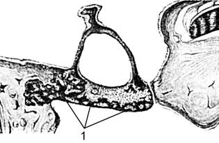
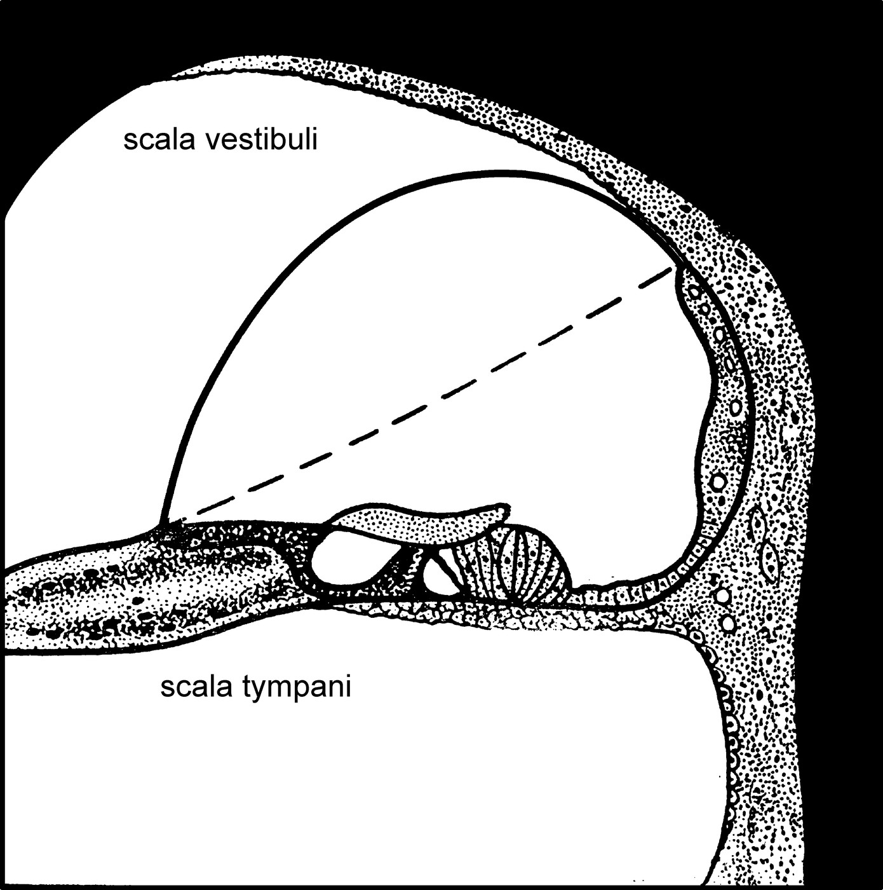
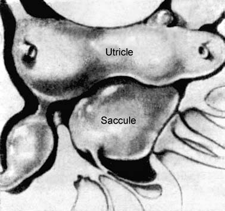

Тугоухость и заболевания внутреннего уха
Нейросенсорная тугоухость: определение и классификация
Нейросенсорной тугоухостью (НСТ) называют снижение слуха, при котором поражён любой участок звуковоспринимающего отдела слухового анализатора, от сенсорных клеток внутреннего уха до коркового представительства в височной доле. По длительности течения выделяют внезапную, острую и хроническую форму. Внезапная НСТ развивается без предвестников, как правило, на одном ухе в течение нескольких часов, нередко во время сна, и обнаруживается сразу после пробуждения. Острая форма нарастает в течение нескольких суток. При хронической НСТ различают стабильную и прогрессирующую стадии.
По уровню повреждения тугоухость бывает периферической, когда страдают сенсорные структуры внутреннего уха, и центральной, при поражении VIII нерва, проводящих путей ствола мозга или коры. По времени возникновения различают прелингвальную тугоухость, развившуюся до формирования речи, и постлингвальную. Нормальным считают порог слуха в пределах 0–25 дБ. Лёгкая степень соответствует порогу 26–40 дБ, умеренная 41–55 дБ, умеренно тяжёлая 56–70 дБ, тяжёлая 71–90 дБ; при пороге свыше 90 дБ говорят о глухоте.
Нейросенсорная тугоухость: причины
Приобретённая НСТ связана с инфекциями, сосудистыми расстройствами, стрессом, интоксикациями, аутоиммунными процессами и травмами. На инфекционную природу приходится около 30% случаев, прежде всего это вирусные заболевания: грипп, эпидемический паротит, корь, краснуха, герпес. Интоксикации составляют 10–15% причин. Ототоксическим действием обладают аминогликозиды, цитостатики, антиаритмические средства, трициклические антидепрессанты и петлевые диуретики.
Сосудистые нарушения (гипертоническая болезнь, вертебробазилярная дисциркуляция, церебральный атеросклероз) приводят к расстройству кровообращения в артериях лабиринта, тромбозам и кровоизлияниям в эндо- и перилимфатические пространства. Травматические причины: перелом пирамиды с повреждением слухового корешка VIII нерва, баротравма с перилимфатической фистулой, акустическая и вибрационная травма. Высокочастотный импульсный шум большой интенсивности обычно вызывает необратимую НСТ. Физиологическое старение даёт пресбиакузис, как правило симметричный. Врождённые формы обусловлены наследственными факторами или патологией родов, чаще гипоксией плода.
Клиническая картина и аудиологическая диагностика НСТ
Ведущая жалоба заключается в снижении слуха на одно или оба уха, часто с субъективным шумом. Достаточно часто выявляется положительный феномен ускоренного нарастания громкости. При односторонней НСТ высокой степени пациент утрачивает способность локализовать звук в пространстве. Сочетание НСТ с вестибулярными нарушениями формирует периферический или центральный кохлеовестибулярный синдром.
При отоскопии патологических изменений не обнаруживается. Снижено восприятие шёпотной и разговорной речи. В камертональных пробах опыты Ринне и Федеричи положительны, а в опыте Вебера1 звук камертона С128–С512 латерализуется в лучше слышащее ухо. Тональная пороговая аудиометрия чаще показывает нисходящую кривую, отсутствие костно-воздушного интервала и обрыв кривой на частотах наибольшего снижения. При надпороговой аудиометрии выявляется ускоренное нарастание громкости, пороги слышимости ультразвука повышены. У детей основным, нередко единственным методом служит регистрация слуховых вызванных потенциалов (коротколатентных и ASSR) наряду с отоакустической эмиссией. Электрокохлеография выявляет гидропс внутреннего уха, коротколатентные потенциалы в ряде случаев указывают на ретрокохлеарную тугоухость. В дифференциальный ряд входят болезнь Меньера, аудиторная нейропатия, опухоли мостомозжечкового угла, фистула лабиринта, рассеянный склероз, острое нарушение мозгового кровообращения, нейроинфекции, аутоиммунные заболевания и патология щитовидной железы.
Наследственная тугоухость
Наследственные нарушения слуха возникают вследствие изменений генов и передаются по законам генетики. Более половины врождённых и доречевых нарушений слуха имеют генетическую природу. На наследственный характер указывают особенности родословной, повторные случаи в семье, кровнородственные браки и характерные клинические признаки. Классификацию строят по наличию патологии других органов (несиндромальные и синдромальные формы), типу тугоухости, роли генетического фактора, типу наследования и возрасту выявления.
Рецессивные формы обычно врождённые, тяжёлые и непрогрессирующие; доминантные, как правило, проявляются в послеречевой период, не ранее 5–6 лет, и прогрессируют. Из синдромальных форм названы синдромы Ваарденбурга, Ушера (с пигментным ретинитом), Пендреда (с зобом) и Альпорта. Наиболее частая форма несиндромальной рецессивной тугоухости связана с мутациями гена GJB2, кодирующего коннексин 26. Для неё характерна врождённая двусторонняя сенсоневральная тугоухость с косонисходящей аудиограммой. Наиболее частой остаётся тяжёлая степень, 75–80% случаев, но описаны и лёгкие формы, а значительное прогрессирование отмечено лишь у 10% детей. У 90% детей с двумя рецессивными мутациями в роддоме не регистрируется отоакустическая эмиссия. Диагностику при подозрении на синдром дополняют осмотром глазного дна (синдром Ушера), исследованием щитовидной железы и КТ височных костей (синдром Пендреда).
Тимпаносклероз
Тимпаносклероз характеризуется рубцово-дегенеративными изменениями в среднем ухе, обусловленными предшествующим воспалительно-деструктивным процессом, завершившимся образованием рубцовой ткани. В результате этого возникают различные варианты рубцевания структур среднего уха, заключающиеся в замене слизистой оболочки соединительнотканными напластованиями, сковывающими подвижность в суставах слуховых косточек, вызывающими облитерацию окон ушного лабиринта, нарушения кровообращения в области лабиринтной стенки и компрессию барабанного сплетения. Эти факторы, с одной стороны, вызывают нарушения звукопроведения, с другой стороны, трофические нарушения барабанного сплетения, его постоянное раздражение и как следствие — вторичную лабиринтопатию, проявляющуюся постоянным ушным шумом, перцептивной тугоухостью и синдромом вестибулярной дисфункции. по: Бабияк и соавт., т. 2, с. 649
Определяющим фактором развития тимпаносклероза является острое или хроническое катаральное или гнойное воспаление среднего уха. Способствующие факторы:
- а) периодическая или постоянная обструкция слуховой трубы;
- б) наличие хронической перитубарной инфекции в области лимфаденоидной ткани;
- в) индивидуальная наклонность к преобразованию соединительной ткани в рубцово-склеротическую;
- г) нарушения обмена веществ, ведущие к пансклерозу, повышению уровня холестерина и мочевины в крови;
- д) аллергия;
- е) частые воспалительные заболевания верхних дыхательных путей.
по: Бабияк и соавт., т. 2, с. 649
Диагноз устанавливают на основании жалоб, отоскопической картины, данных акуметрии и аудиометрии, рентгенологического обследования. Жалобы: тугоухость, постоянный субъективный низкочастотный шум в ухе, периодические невыраженные головокружения. Акуметрия свидетельствует о наличии кондуктивной или смешанной (при длительном процессе) тугоухости: шёпотная речь — от «у раковины» до 0,5–2–3 м, отрицательный опыт Швабаха, в опыте Вебера — латерализация звука в больное ухо. Восходящий тип тональной аудиограммы с наличием резерва улитки, определяемого степенью вовлечённости в процесс звуковоспринимающего аппарата. Рентгенологическое обследование (проекции по Шюллеру и Шоссе III, трансорбитальная по Гюиллену, томография, КТ) указывает на деструкцию височной кости, наличие рубцовой ткани в барабанной полости и различные виды деструкции её элементов.
Клиническое течение характеризуется прогрессивным снижением слуха и постепенным усилением симптомов кохлео- и вестибулопатии. При длительном течении заболевания развиваются признаки перцептивной тугоухости, приводящей к смешанной её форме и снижению резерва улитки. по: Бабияк и соавт., т. 2, с. 649–650
Отосклероз
Отосклероз представляет собой очаговое изменение энхондрального слоя костной капсулы лабиринта, нередко с фиксацией основания стремени в окне преддверия. Проявляется он прогрессирующим, обычно двусторонним снижением слуха и шумом. Чаще начинается в 20–50 лет, женщины болеют вдвое чаще. Этиология не установлена; обсуждаются роль вируса кори, наследственность и аутоиммунные процессы. Гистологически очаг представляет собой участок новообразованной кости с неправильной структурой и множеством сосудистых пространств, в молодом возрасте он активнее. Поражение края окна преддверия ведёт к анкилозу стремени и кондуктивной тугоухости, очаги в области лестниц лабиринта дают нейросенсорный компонент.

По аудиометрической кривой выделяют тимпанальную (фенестральную), кохлеарную и смешанную формы, по течению активную (отоспонгиозную) и неактивную (склеротическую) стадии. Тугоухость нарастает периодами стабилизации и ухудшения, регресса не бывает. Характерен паракузис Виллизия2, то есть лучшее восприятие речи в шуме, чем в тишине; он встречается примерно у половины больных. Шум в ушах, чаще низкочастотный, наблюдается у 67–98% пациентов; вестибулярные симптомы менее типичны.

Отоскопическая картина скудна: характерные признаки есть лишь у 10–21% больных. Это симптом Лемперта (истончение барабанной перепонки), симптом Швартце (розовое просвечивание слизистой оболочки в области мыса при активной стадии), отсутствие серы, сухость кожи и широкий наружный слуховой проход. Ни один из признаков не патогномоничен. При смешанной и кондуктивной формах с костно-воздушным интервалом более 20 дБ опыт Ринне отрицателен. На аудиограмме повышены пороги по воздуху, чаще кривая восходящая, позже она уплощается. Единственным методом объективизации очагов служит КТ височных костей со срезом не толще 1 мм; плотность капсулы лабиринта снижается с +2000…+2200 до +1500…+300 ед. Н. Дифференцируют отосклероз с адгезивным средним отитом, травмой цепи слуховых косточек, врождёнными аномалиями и новообразованиями среднего уха. Глухота развивается крайне редко.
Отосклероз: клиническая картина, обследование и стадии
В связи с постепенным развитием отосклеротического процесса начальные клинические признаки остаются незамеченными, больные обращаются к врачу только после появления в одном ухе субъективного постоянного ушного шума. В некоторых случаях отосклероз развивается быстро, с ранним развитием кохлеарной формы; косвенными признаками этой формы являются выраженный симптом Шварце, начало заболевания в раннем возрасте, прогрессирующая дискантовая тугоухость при воздушном и костном звукопроведении. В начале заболевания поражается одно ухо, затем проявления обнаруживают и в другом. Как правило, полная глухота не наступает; только в далеко зашедшей стадии кохлеарной формы возникает тугоухость IV степени. В 3–10% случаев процесс поражает одно ухо, оставляя интактным другое на протяжении всей жизни. по: Бабияк и соавт., т. 2, с. 652–653
Субъективные симптомы:
- тугоухость, постепенно начинающаяся и медленно развивающаяся; в начале заболевания ухудшается восприятие низких частот при более отчётливом восприятии высоких: больные хуже понимают мужскую речь и лучше — женскую и детскую; тугоухость никогда не регрессирует и может прогрессировать при утомлении, эндокринных изменениях (менструальный цикл, беременность, роды, кормление);
- симптом Уиллиса (paracusis Willisii) — кажущееся улучшение слуха в шумной обстановке; больные говорят тихо, поскольку костное звукопроведение не страдает или даже улучшается, а восприятие речи ухудшается при жевании или ходьбе (paracusis Weber);
- ушной шум — в 80% случаев, низкочастотный, близкий по спектру к белому шуму, строго в ухе, с которого начинается процесс;
- головокружение — редко, слабовыраженное и преходящее; при выраженном головокружении следует предположить другую этиологию, чаще всего поздний врождённый сифилис;
- боли в ухе — редко, скорее ощущение распирания в области сосцевидного отростка в периоды обострения;
- неврастенический синдром, чаще в гипостенической форме.
по: Бабияк и соавт., т. 2, с. 653–654
Объективные симптомы. Триада Холмгрена: атрофия и сухость кожи наружного слухового прохода, отсутствие ушной серы, пониженная чувствительность кожи прохода. Барабанная перепонка при выраженной тугоухости нормального вида, иногда истончена или утолщена; при её атрофии просвечивает гиперемированная слизистая оболочка промонториума (розовое пятно Шварце) — симптом, оцениваемый многими специалистами как патогномоничный.
Шёпотная речь воспринимается хуже, чем разговорная. Камертональное исследование указывает на нормальную или даже повышенную тканевую проводимость: триада Бецольда — нормальный или удлинённый опыт Швабаха, отрицательный опыт Ринне и латерализация звука в опыте Вебера в сторону хуже слышащего уха; опыты Желле и Бинга отрицательны. При тональной пороговой аудиометрии, как правило, выявляется смешанный тип тугоухости, в начальной стадии характерен зубец Кархарта на частоте 2048 Гц; расстояние между кривыми костной и воздушной проводимости определяют как резерв улитки. Дифференциальный порог интенсивности в пробе Люшера сохраняется в пределах нормы или слегка увеличен (1,7–2,0 дБ).
При отосклерозе наблюдаются скрытые или явные преходящие нарушения вестибулярной функции. По данным В. Т. Пальчуна и Н. А. Преображенского (1987), при калорической пробе и электронистагмографии у 21% функция вестибулярного аппарата в норме, у 64% отмечается гипорефлексия, у 15% — гиперрефлексия. Гипорефлексия наблюдается при смешанной и кохлеарной формах, гиперрефлексия — в периоды активной фазы процесса. по: Бабияк и соавт., т. 2, с. 654–655
Различают четыре стадии развития отосклероза:
- I стадия (дебют) — начальные признаки нарушения звукопроведения при нормальном костном звукопроведении, лёгкое снижение слуха на низкие частоты, удлинённый опыт Швабаха, хуже воспринимаются слова с низкочастотными формантами («ворон», «окно»), отчётливая триада Бецольда, дифференциальный порог интенсивности в норме;
- II стадия — начальное поражение улитки и смешанная тугоухость: снижение резерва улитки и дифференциального порога интенсивности (рекрутмент), ухудшение восприятия слов с высокими звуками («жечь», «печь»), резко удлинённый опыт Швабаха;
- III стадия — отчётливые признаки поражения улитки: наклонные кривые костной и воздушной проводимости, дальнейшее снижение резерва улитки и сужение динамического диапазона, дифференциальный порог интенсивности 1,2–0,8 дБ;
- IV стадия — глубокая атрофия спирального органа: резкая потеря слуха с обрывом кривых по костной и воздушной проводимости при сохранении отрицательного опыта Ринне.
по: Бабияк и соавт., т. 2, с. 655–657
Стадии отражают динамику слуховой функции при длительном (10–20 лет) развитии процесса, однако нередко он развивается значительно быстрее, достигая кохлеарной формы за 3–5 лет. По данным Lermoyez, первично смешанная форма встречается в 15%, первично кохлеарная, по данным R. Manasse, — в 5–10% случаев. по: Бабияк и соавт., т. 2, с. 657
Болезнь Меньера: этиология и клиническая картина
Болезнь Меньера определяют как заболевание внутреннего уха, обусловленное эндолимфатическим гидропсом и проявляющееся приступами системного головокружения, шумом в ушах и прогрессирующей НСТ. Этиология неизвестна, основным остаётся термин «идиопатическая». Среди факторов называют вирусные инфекции, сосудистые нарушения, аутоиммунные и аллергические реакции, травмы и эндокринные заболевания. Поражение, как правило, односторонне, двустороннее наблюдается примерно у 30%; при одновременном двустороннем гидропсе его считают вторичным.

Большинство больных не отмечают предвестников, около 60% связывают начало со стрессом. Приступ представляет собой системное головокружение с тошнотой и рвотой, длящееся от нескольких минут до нескольких часов, с шумом и снижением слуха. Ему может предшествовать несколько дней заложенности и полноты в ухе. Частота приступов колеблется от ежедневных до одного в несколько месяцев. На I стадии возникают шум, заложенность и флюктуирующая НСТ преимущественно на низких и средних частотах, в ремиссии пороги могут быть нормальными. На II стадии приступы типичны, шум постоянен, тугоухость флюктуирует (II–III степени), появляется стойкое снижение слуха в межприступный период. На III стадии приступы реже, преобладают шаткость и неустойчивость, флюктуация слуха редка, вестибулярная функция на стороне поражения угнетена или отсутствует.

Болезнь Меньера: диагностика
Барабанные перепонки при отоскопии не изменены. В опыте Вебера звук латерализуется в сторону лучше слышащего уха, опыты Ринне и Федеричи положительны. На начальной стадии аудиограмма восходящая или горизонтальная, с наибольшим поражением низких частот и костно-воздушным интервалом 5–15 дБ на частотах 125–1000 Гц; позднее потеря слуха достигает IV степени. Надпороговая аудиометрия выявляет ускоренное нарастание громкости. Во время приступа регистрируют спонтанный горизонтально-ротаторный нистагм: в стадии раздражения быстрый компонент направлен в больную сторону, в межприступный период в здоровую. В межприступном периоде вестибулярная функция может быть нормальной, но обычно выявляется гипорефлексия на поражённой стороне, а выраженность асимметрии растёт с развитием болезни.
Для подтверждения гидропса применяют дегидратационные пробы и электрокохлеографию. Проба считается положительной, если через 2–3 ч пороги улучшаются не менее чем на 5 дБ по всему диапазону или на 10 дБ на трёх частотах, а разборчивость речи растёт не менее чем на 12%. Электрокохлеография выявляет гидропс по негативной волне суммационного потенциала, отношению суммационного потенциала к потенциалу действия более 0,4 и сдвигу латентности потенциала действия более чем на 0,2 мс. Дифференцируют болезнь Меньера с вертебробазилярной недостаточностью, ДППГ, опухолями мостомозжечкового угла, фистулой лабиринта, вестибулярным нейронитом и рассеянным склерозом.
Доброкачественное пароксизмальное позиционное головокружение
Доброкачественное пароксизмальное позиционное головокружение (ДППГ) представляет собой приступообразное вестибулярное головокружение, провоцируемое изменением положения головы и тела. Причину в 50–75% случаев установить не удаётся; возможны травма, нейролабиринтит, болезнь Меньера и операции. Механизм связывают с отрывом фрагментов отолитовой мембраны, которые смещаются в полукружные каналы. При каналолитиазисе частицы свободно лежат в просвете канала, при купулолитиазисе фиксированы на купуле. Чаще всего поражён задний канал (более 80%), реже горизонтальный (10–12%) и передний.
Головокружение системное, интенсивное и продолжается не более минуты. Чаще оно возникает утром после сна или при повороте в постели, а также при запрокидывании и наклонах головы. Слух не меняется, другой симптоматики нет. Диагноз подтверждают позиционные пробы Дикса — Холлпайка и Брандта — Дароффа. Типичный нистагм имеет латентный период (до 3–4 с для заднего и переднего каналов, 1–2 с для горизонтального), быстро истощается (30–40 с для заднего и переднего каналов, 1–2 мин для горизонтального), сопровождается головокружением и при возврате в исходное положение сменяется реверсивным. Нистагм подавляется фиксацией взора, поэтому его выявляют с очками Френзеля либо видеоокулографией. Центральный позиционный нистагм имеет вертикальное или диагональное направление, не истощается и не подавляется фиксацией; он указывает на поражение задней черепной ямки, рассеянный склероз или вертебробазилярную недостаточность. Прогноз благоприятный, возможно самопроизвольное выздоровление за 3–4 недели и более.
Вестибулярная дисфункция сосудистого генеза
Под вестибулярной дисфункцией сосудистого генеза понимают нарушение вестибулярной функции при расстройстве кровообращения в центральных и периферических отделах анализатора. Синонимами служат вертебрально-базилярная недостаточность и дисциркуляторная энцефалопатия. Причиной становятся артериальная гипертония, атеросклероз, патология магистральных артерий головы, вегетативно-сосудистая дистония, а также аномалии, стенозы и деформации позвоночных артерий. Передненижняя артерия мозжечка питает не только ствол и мозжечок, но и внутреннее ухо, поэтому изменение кровотока вызывает ишемию лабиринта и корешка VIII нерва. Периферическое головокружение возникает значительно чаще центрального.
Больные предъявляют жалобы на приступы системного или несистемного головокружения, тошноту, рвоту, шум и снижение слуха; приступы могут напоминать болезнь Меньера и связаны с колебаниями артериального давления, поворотами головы и стрессом. Острая односторонняя сенсоневральная тугоухость с выпадением вестибулярной возбудимости составляет симптомокомплекс инфаркта внутреннего уха. При периферическом синдроме обнаруживают односторонний спонтанный нистагм с отклонением рук и туловища в сторону медленного компонента, очаговой неврологической симптоматики нет. Центральный синдром характеризуется очаговой симптоматикой и двусторонним или множественным нистагмом. Аудиометрия обычно выявляет высокочастотную, чаще двустороннюю сенсоневральную тугоухость. Сосудистую патологию уточняют ультразвуковой допплерографией и нейровизуализацией. Дифференцируют с болезнью Меньера, невриномой VIII нерва и рассеянным склерозом.
Лабиринтит
Лабиринтит представляет собой воспаление внутреннего уха, вызванное проникновением микроорганизмов или их токсинов и проявляющееся сочетанным нарушением вестибулярной и слуховой функции. Чаще всего источником служит воспаление среднего уха: острый и хронический средний отит, мастоидит, холестеатома, петрозит. По пути проникновения различают тимпаногенный, менингогенный, гематогенный и травматический лабиринтит, по характеру воспаления серозный, гнойный и некротический, по течению острый и хронический, по распространённости ограниченный и диффузный. Ограниченный лабиринтит возникает при хроническом гнойном эпитимпаните с фистулой, чаще в области латерального полукружного канала.
Острый лабиринтит проявляется лабиринтной атакой: внезапным системным головокружением с тошнотой, рвотой, нарушением равновесия, шумом и снижением слуха. При серозной форме симптомы стихают за 2–3 недели, при гнойной возможно затяжное течение. Стойкая глухота чаще указывает на гнойное воспаление. Туберкулёзный лабиринтит течёт хронически и латентно. Диагностическое значение имеет спонтанный нистагм периферического типа: вначале он направлен в сторону поражённого лабиринта, затем меняет направление, а через 2–3 недели исчезает. При ограниченном лабиринтите с фистулой компрессия воздуха в наружном слуховом проходе вызывает головокружение и нистагм (фистульный симптом). Слух снижается по смешанному типу, чаще с преобладанием сенсоневрального компонента. Необходимо исключать внутричерепные осложнения, менингит и абсцесс мозга (КТ и МРТ), отогенный арахноидит и тромбоз внутренней слуховой артерии.
Примечания
1Weber Ernst H. (1795–1878) — немецкий анатом и физиолог, автор акуметрического опыта, при помощи которого дифференцируют нарушение функции звукопроведения от функции звуковосприятия (тест латерализации звука при тканевом проведении). (по: Бабияк и соавт., т. 2, с. 714)
2Willis Thomas (1621–1675) — выдающийся английский анатом и врач, впервые описавший артерии основания головного мозга, которым впоследствии было дано название circulus arteriosus Willisii, а также XI пару черепных нервов — n. accessorius Willisii. (по: Бабияк и соавт., т. 2, с. 714)
Источники
- Оториноларингология: национальное руководство / под ред. В. Т. Пальчуна. — 2-е изд. — М.: ГЭОТАР-Медиа, 2020. — Гл. 11 «Болезни уха», разделы «Нейросенсорная тугоухость», «Наследственные нарушения слуха», «Отосклероз», «Болезнь Меньера», «Доброкачественное пароксизмальное позиционное головокружение», «Вестибулярная дисфункция сосудистого генеза», «Лабиринтит» (постраничная нумерация в тексте источника отсутствует).
- Бабияк В. И., Накатис Я. А., Говорун М. И. Оториноларингология. Руководство. Т. 2. — СПб.: Питер, 2009. — Гл. 30 «Негнойные заболевания уха», разделы «Тимпаносклероз»: с. 649–650; «Отосклероз» (клиническая картина, обследование, стадии): с. 652–657.
- Бабияк В. И., Накатис Я. А., Говорун М. И. Оториноларингология. Руководство. Т. 2. — СПб.: Питер, 2009. — Примечания к главам (сведения об учёных): с. 714.
- Бабияк В. И., Накатис Я. А., Говорун М. И. Оториноларингология. Руководство. Т. 2. — СПб.: Питер, 2009. — Гл. 30 «Негнойные заболевания уха», рисунки 30.1, 30.2, 30.11, 30.12: с. 651–679.
Раздел «Учебник» — справочная теория, не клинические рекомендации. Тактика ведения пациента — по разборам КР.